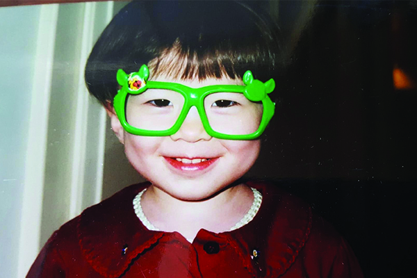

Casey Price and Nada Lamie are soulmates. They plan on traveling the world together and they’re starting close to home (SoCal). Casey and Nada love hiking and spending time outdoors and are both first year college students so they don't do much of either.
Their goal is to visit all the National Parks at least once.

Casey and Nada advertise their political affiliation

Casey has clearly always been a green party member

Young Nada has always had dark circles apparently
Join in our journey by looking through the website to get some inspiration and support them in reaching their goal. Also the environment needs you. These beautiful parks depend on you doing your part and not being a dick! Learn more about how you can help here! We love you and hope you join us by physically going to the parks, donating to wildlife or supporting us in spirit.
More about Casey...
Casey is currently a freshman at UCSD studying Computer Science. She was born and raised in California.
More about Nada...
Nada is currently a freshman at UCB studying Genetics and Plant Biology. She was born and raised in Cairo, Egypt and moved to California when she was 12. She enjoys drawing and spending time outdoors as well as reading and solving cryptograms (click here for books she recommends). She likes listening to showtunes and watching Marvel movies. Nada has also been known to be one of the funniest people you'll ever meet! She hopes you enjoy this website and hopefully go out and visit the parks and look more into ways you can contribute to conservation efforts.
Casey & Nada
Casey and Nada officially met in 2013 when they were both taking an art class in middle school, they did not immediately hit it off, they were friends but were not that close. Fast forward to 2017 when Nada convinces Casey to try out for the school's Science Olympiad team, Nada and Casey had been friends for the past 4 years and to be completely honest Nada just wanted more people to try out for the team so she and her co-captain could have a larger pool of candidates to choose the team from. Casey tried out, made the team and the rest is history.
Today Casey and Nada mainly communicate by message to complain about any and everything and reminisce about the good old days, they may not see each other often but they are closer than they have ever been
What's next?
Nada and Casey look forward to visiting all the National Parks together when they have stable jobs and can afford to! Financial security is no joke!